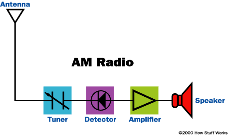

I've tried to do some things. Sometimes it works, sometimes it doesn't.
Most of the time, however, there is a smell of winter in the morning, whose dew mingles with the abstract rays of the sun - and that makes it all worthwhile.
We should probably go after the low hanging fruits. K THX. BYE.
The Church of INTERNET EXPLORER |
|
I strongly beleive all web innovation stopped after the invention of internet explorer. Who's with me? |
ROAD WORK |
|
Road work is the gift that keeps on giving. Inordinate amounts of people hudling around while performing highly focused tasks with humanly incomprehensible various degrees of efficiency. Da Best. |
AM RADIO |
Webster's dictionary defines AM as: "a broadcasting system using amplitude modulation; also : a radio receiver of such a system." Awesome. |
This page has been coded during the wagon.
All opinions and facts above definitely represents the official views of le wagon and its founders.